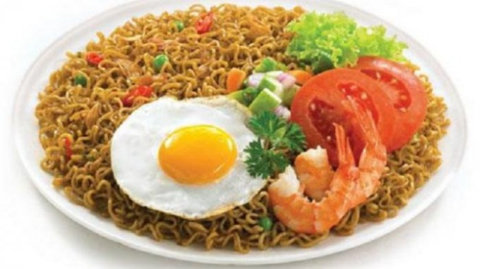
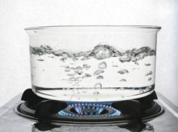
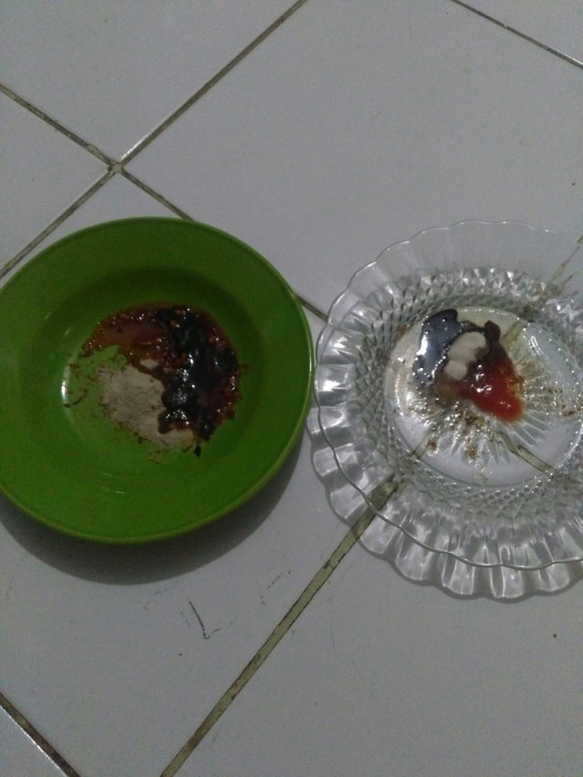
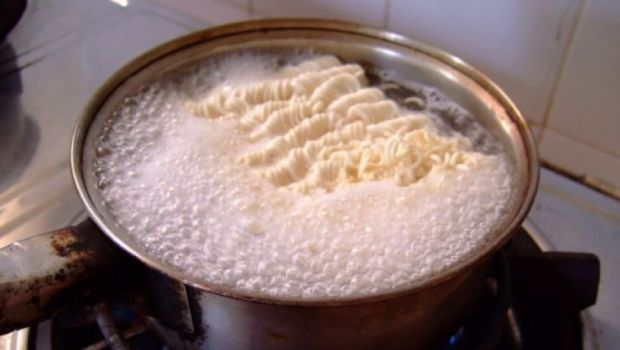
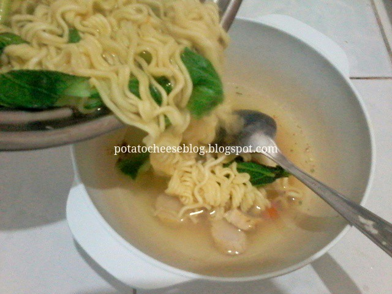
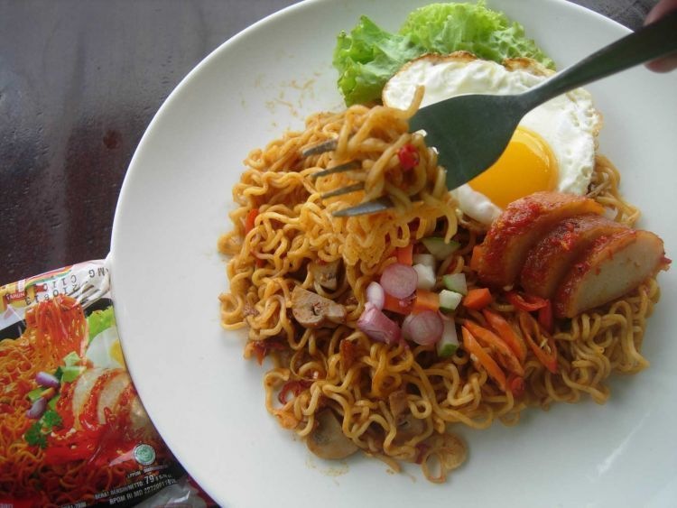
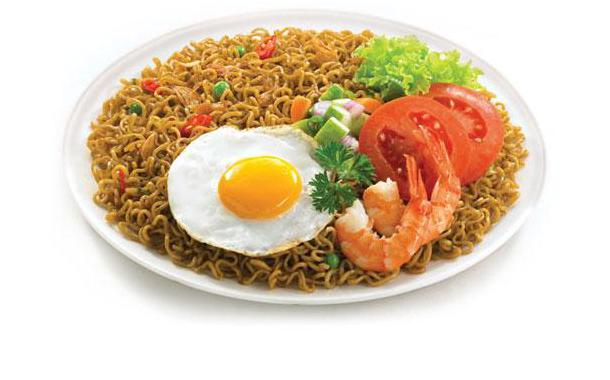

Resep Mie Instant

Alat Dan Bahan
- Mie Instant
- A I R Secukupnya
- Panci
- Sendok
1. Rebus Air Sammpai Panas

2. Lalu Siapkan Bumbmu dan Mangkuk Lalu Masukan Bumbu kedalam Mangkuk

3.Masukan Mie Kedalam Air Yang Sudah Panas lalu Tunggu 5 - 10 Menit

4. Tuangkan Mie Kedalam Mangkuk

5. Lalu Silahkan Diaduk dengan Bumbunya

6. Mie Telah Jadi
